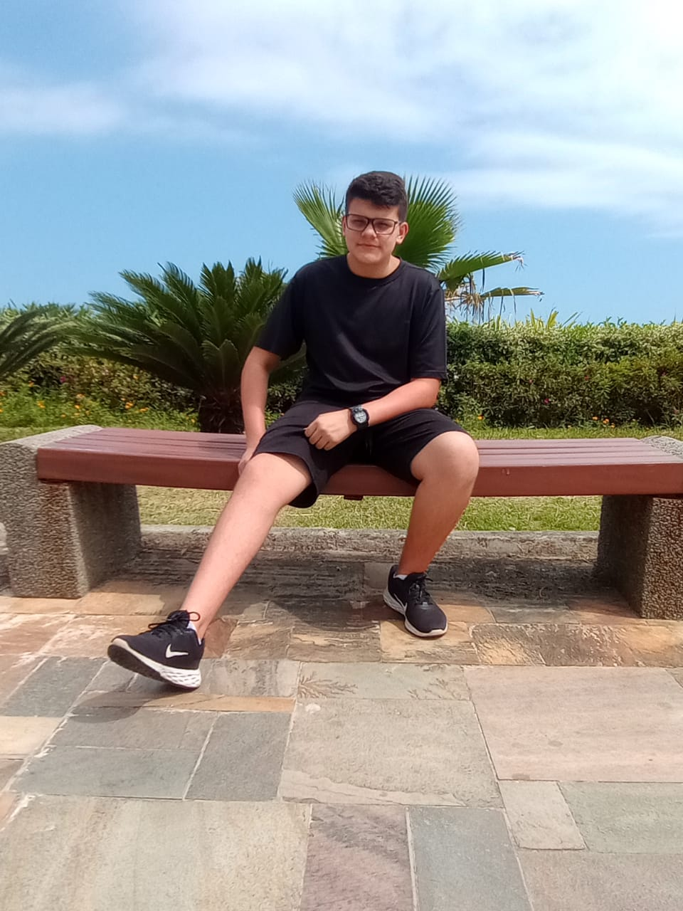
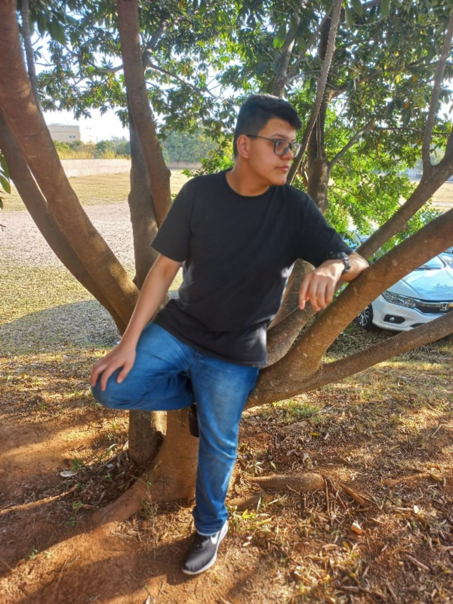
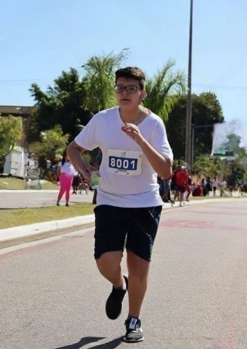

"Meu Pessoal"



Olá! Me chamo Adriano Barbosa
Tenho 16 anos e sou de Itu-SP🌎
Adoro ouvir músicas🎧
Adoro tentar programar sistemas
Me esforço o maxímo para conseguir entregar o meu melhor!
Gosto de jogar diversos jogos
Um esporte que eu sou bom, hum...... Vôlei
"Estudos"
Estudante de Desenvolvimento de Sistemas(TI) na Etec/Fatec
Estudando HTML, CSS, Portugol, informática avançada e Desing Digital
Passo a maior parte do tempo mexendo nessas áreas de Sistemas e Software
Desde quando eu tinha 12 anos, já gostava de informática e programação
Quando conseguir entrar no curos foi uma realização de um sonho pra mim
Ainda estou aprendendo, mais gosto bastante do curso
Pretendo fazer mais cursos sobre programação e de sistemas
"Cursos"
Fundamentos das Aplicações Móveis
Cultura Digital
HTML e CSS na Prática
Fundamentos de TI: Hardware e Software
SharePoint